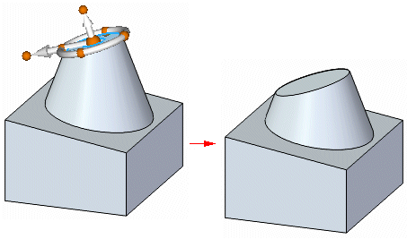
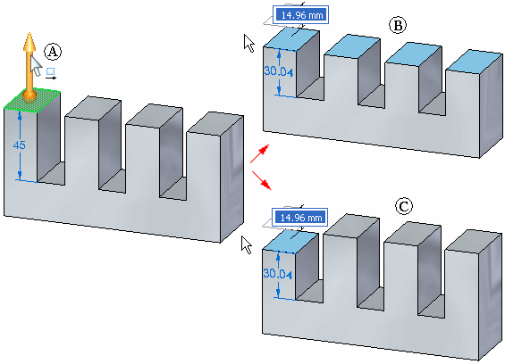
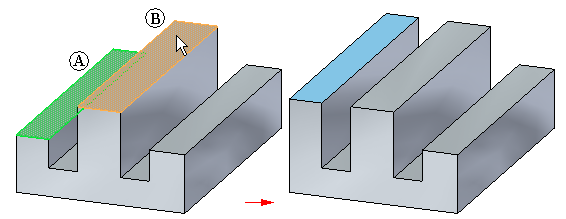
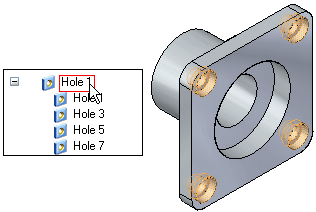
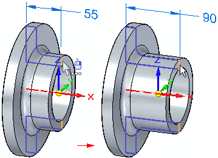

Modify a model (overview)
You can modify synchronous models in many different ways.
Move or rotate part geometry using the steering wheel.
Example:You can modify a model using the steering wheel (A) to move a model face.

Modify cylinders, cones, spheres, and tori

Choose multiple items to modify at the same time using the Selection Manager menu .
When moving a part face, the design intent built into the model is recognized. The Design Intent panel identifies the faces in the model that are related to the face you are moving. See Using the Design Intent panel for more information.
Watch a short video about the Design Intent panel:
Example:When the Coplanar design intent is preserved, the unselected coplanar faces stay coplanar (B) when moving the selected face. When the Coplanar option on the Design Intent panel is cleared, the unselected coplanar faces remain stationary (C) when moving the selected face.

SeeUsing the Design Intent panel for more information.
Use the Relate command to define a relationship between two faces.
Example:You can use the Coincident option to specify that the seed face (A) is made coincident (coplanar) to a target face (B) you select on the model.

-
Example:
Detaching faces or features makes it possible for you to move or rotate the face set to a new position on the model and then reattach them in the new location.

Modify features which are part of a feature set, such as holes and patterns.
Example:You may need to modify the diameter of one hole in a set of holes that originally had the same feature parameters, such as diameter and depth.

For parts that contain revolved features, you can Create a live section to make it easier to visualize and edit the part.
Example: